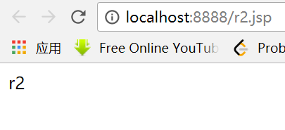
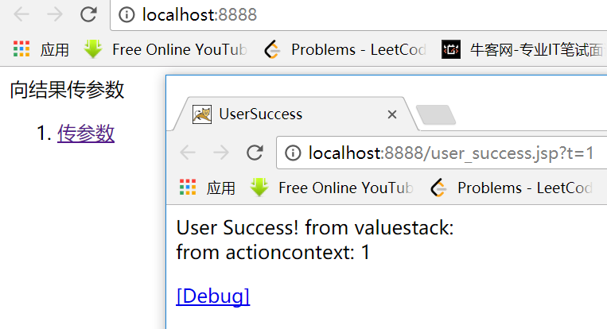

第二十七课. 结果类型 result_type1
先看效果：
看代码（struts.xml）:
之前我们没有指定result的type，默认就是dispatcher，就是运用服务器跳转到一个结果页面，原理就是用jsp的forward，forward到一个html或jsp或其他文件。
chain的意思是forward到一个action，而dispatcher只能是jsp或html
redirect也只能跳转到一个视图，不能跳转到一个action
如果想客户端跳转到一个action，就用redirectAction
用的比较多的就是前四种，其中dispatcher和redirect用的最多
httpheader就是发送一个http的头信息
stream就是下载
velocity和freemarker是特别相似的模板框架，不过干不过freemarker，已经几乎被淘汰
xslt是修饰的xml语言
paintext是可以将页面源码显示出来（一般我们都显示出来的是经过解析后的html文件）
tiles可以将页面分成几块，每块内容动态指定。
除了前四种，其他知道就行了。
先看第一种，dispatcher：
发现url访问的是服务端的action，也就是说，dispatcher完成的是服务端跳转，过程如下：
而redirect完成的是客户端跳转，所以访问后显示的url是重定向后的jsp：

客户端跳转如下图所示：
对于chain，访问同一个包的action时，不要在前面加/如果访问其他包的Action，例如p2的action，那么可以写成p2/r1
运行效果：
看到r3访问同包中r1的action，r1的action帮我们在服务端dispatcher到了r1.jsp，所以最后链接显示的是r3的action，但是实际显示的是r1的jsp
再实验第四个，也就是redirectAction：
发现显示的是r2.jsp,而且链接也跳到了r2.jsp，这是因为我们利用redirectAction，想访问r2的Action，而r2的action进行了客户端跳转，所以最后给我们客户端返回的是r2.jsp。
第二十九课. result type 常见问题.
当我们使用chain的result type时，如何能跳转到其他package下的action ?
通过加参数就可以解决~
第三十课. Global Results 全局结果集
先把project部署好，运行看效果：
index.jsp代码：
来看我们的UserAction.java:
依次点击三个链接，效果如下：
发现当传入type=1时，返回seccess，传入type=2时，返回error，传入type=3时，返回mainpage，它们都是result名字，我们再看struts.xml对这些result的配置：
发现这次有好几组action，每一个action里面配置了一组result，我们发现，result中有名字叫success和error的，但是唯独没有叫mainpage，再往上看才发现，mainpage配置在了一个global-results中，global-results实际相当于所有在同一个package中的action的共同result配置，每一个在这个package中的action都可以进行访问，也就是一个全局结果集。
我们考虑第二种情况，如果现在下面的名字叫admin的package中的action想要访问mainpage，但是由于不在user包中，应该怎么办？
其实我们上面的代码已经给出了答案，就是admin的package中，加了一个extends的配置，设置为extends=”user”，也就是从user包中继承配置，这样就有了mainpage这样的result结果集。
在AdminAction.java中返回mainpage：
|
|
结果就会映射到我们的main.jsp：
这是一种设计思想，就是可以在struts.xml中定义一个公用的package，然后每一个package都可以对这个公用包进行extends。
如果没有想继承的，就可以设置extends="struts-default"，这个就是默认配置。
struts-default的详细代码在struts2-core-2.1.6.jar!\struts-default.xml中可以查看，可以说，struts很复杂，但是它的复杂使我们使用起来更加简单。
第三十一课. 动态结果集 dynamic result.
运行起来看结果：
发现传入一个type=1就可以返回一个success的jsp页面。怎么做到的呢？
我们先来看struts.xml：
当接收到链接中的user包时，开始匹配，匹配到了我们的user包，然后执行UserAction这个Action：
发现type=1被直接传入了UserAction里面，然后执行execute()方法，因为type=1，所以r=”/user_success.jsp”，这时r被存入值栈。我们查看值栈：
发现r=”/user_success.jsp”已经被放入值栈，这时候我们执行result，${r}用于从值栈中取出r的值，也就是/user_success.jsp，这样我们的页面就显示为/user_success.jsp。这就是动态结果集。
第三十二课. 带参数的结果集
先部署、运行，看效果：

发现从值栈中取不出数值，但是从actioncontext却可以。来看代码：
先看index.jsp：
发现执行名字叫user的Action，传入参数type=1，
再看struts.xml：
找到user的package和user的Action，执行UserAction对象。
查看UserAction.java的代码：
发现UserAction里面有一个type属性，URL里面的type=1就被传入
而<result type="redirect">/user_success.jsp?t=${type}</result>
一句重定向，将type从值栈中取出，作为参数t发给服务端，因而这是一个新的request，所以要开辟一个新的值栈。
然后看我们的user_success.jsp文件：
发现第一个是直接从值栈中去取t的值，由于已经重定向，所以最初的t的值并没有存入值栈，这时候我们就可以通过第二种方式来拿这个值，就是通过发请求时附加参数的方式，最后通过#parameters.t的方式就可以取到了。
完整的过程如下图所示：
第三十三课. 结果集总结
Result
- 常用四种类型
a) dispatcher（默认）
b) redirect
c) chain
d) redirectAction - 全局结果集
a) global-results | extends - 动态结果（了解）
a) 在action中保存一个属性，存储具体的过程location - 传递参数
a) 客户端跳转才需要传递
b) ${}表达式（不是EL）